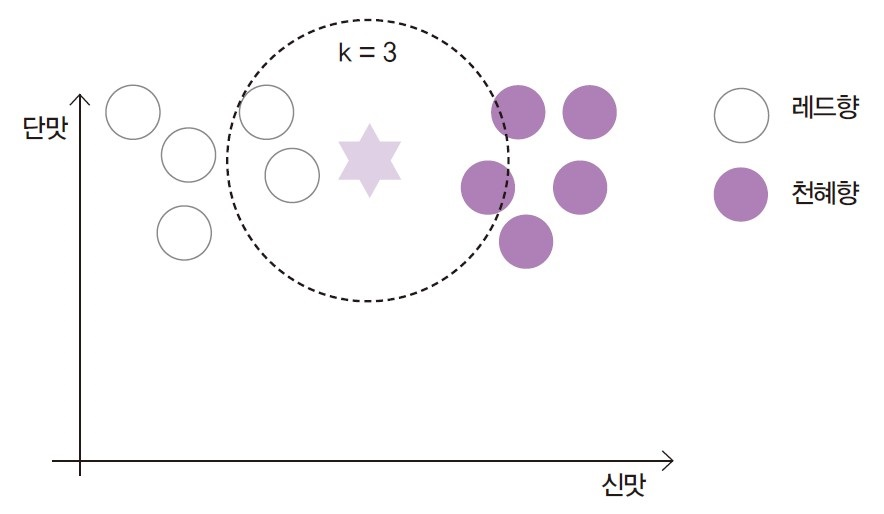
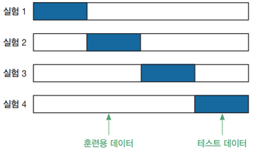
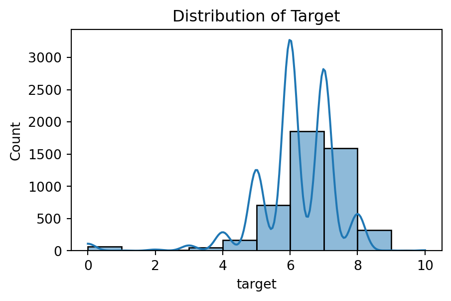
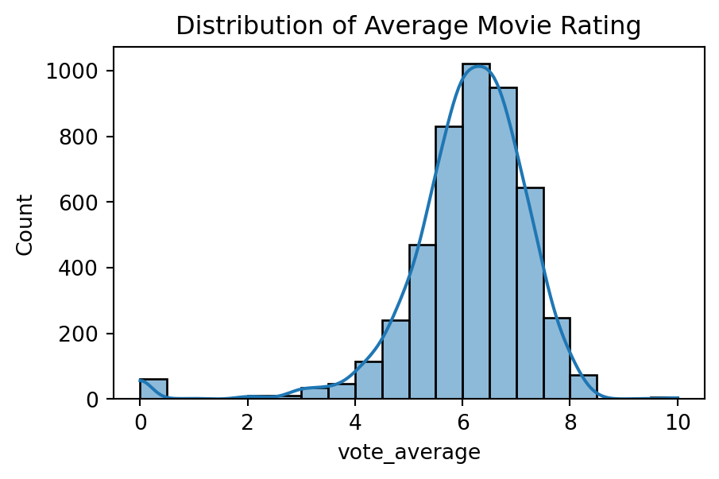
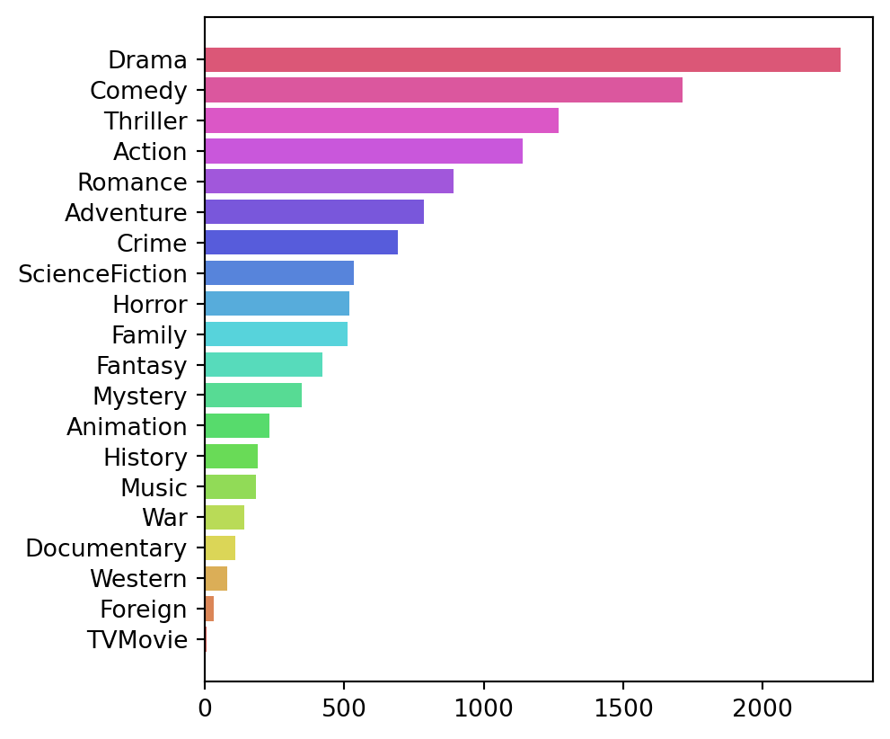
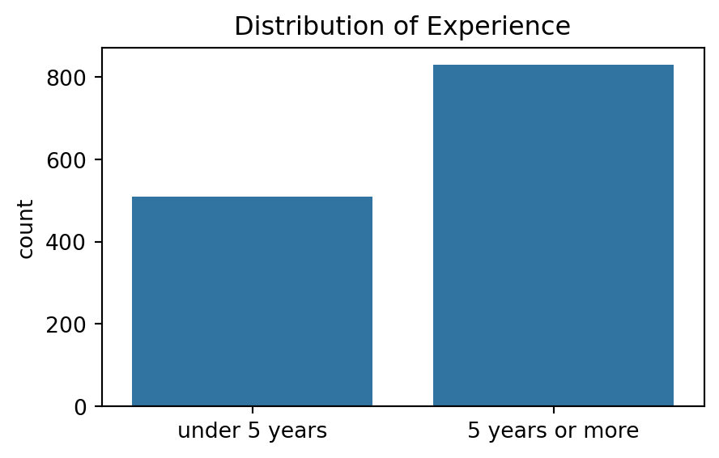
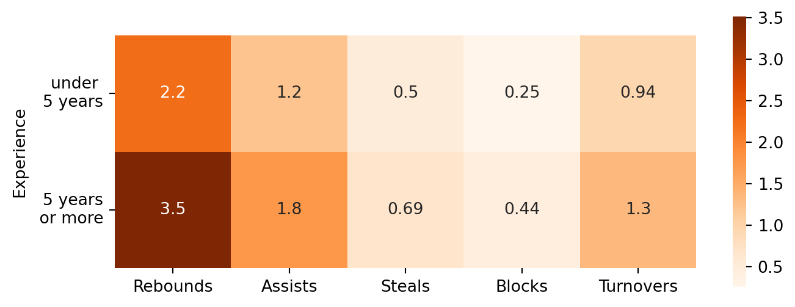

## (1) 데이터 확인 및 전처리
- 지도학습 : 분류
9.1. K-최근접 이웃
- 분류(classification)
- 지도학습의 한 종류로, 정답(label)이 범주형 변수일 때 사용됨
- 각 데이터가 속하는 집단(category) 간 관계를 학습함
- 학습된 모델은 새로운 데이터가 속하는 집단을 예측할 수 있음
- 혼동 행렬(confusion matrix)
| 구분 | 예측 Positive |
예측 Negative |
|---|---|---|
| 실제 Positive | True Positive(TP) | False Negative(FN) |
| 실제 Negative | False Positive(FP) | True Negative(TN) |
- 분류모델 평가지표
| 지표 | 설명 |
|---|---|
| 정확도 (accuracy) |
전체 중에서 실제와 동일하게 예측한 비율, \(\frac{TP + TN}{TP + TN + FP + FN}\) |
| 정밀도 (precision) |
모델이 양성이라고 예측한 것 중에서 실제로 양성인 비율, \(\frac{TP}{TP + FP}\) |
| 재현율 (recall, sensitivity) |
실제 양성 중에서 모델이 양성이라고 예측한 비율, \(\frac{TP}{TP + FN}\) |
| 특이도 (specificity) |
실제 음성 중에서 모델이 음성이라고 예측한 비율, \(\frac{TN}{TN + FP}\) |
| F1-score | 정밀도와 재현율의 조화 평균 |
- K-최근접 이웃(K-Nearest Neighbors; K-NN)
- 새로운 데이터가 입력되었을 때, 가장 가까운 k개의 이웃 데이터를 기준으로 분류하는 통계 기법
- 새로운 데이터와 가장 거리가 가까운 k개의 데이터를 찾음
- 해당 k개의 데이터가 가장 많이 속한 클래스(class)로 새로운 데이터를 분류함(다수결 원리)
- 일반적으로 k는 동점 상황을 피하기 위해 홀수로 설정함
- 거리 계산에는 주로 유클리디안 거리(Euclidean distance)를 사용함
- 새로운 데이터가 입력되었을 때, 가장 가까운 k개의 이웃 데이터를 기준으로 분류하는 통계 기법
- 예 : 천혜향과 레드향의 선호도 예측
- k=3일 때, 새로운 사람의 선호하는 맛(별 모양)과 가장 가까운 거리에 있는 3개의 데이터를 찾음
- 이웃 중 레드향을 좋아하는 사람이 2명, 천혜향을 좋아하는 사람이 1명이므로, 새로운 사람은 레드향을 선호하는 것으로 분류함

- k 값
- K-NN 알고리즘은 탐색할 이웃의 개수(k)에 따라 분류 결과가 달라질 수 있음
- k가 너무 크면, 데이터의 세세한 패턴을 반영하지 못해 과소적합 발생
- k가 너무 작으면, 개별 데이터에 민감하게 반응하여 과대적합 발생
- 일반적으로 최적의 k 값은 교차검증을 통해 모형 성능이 가장 좋은 k 값으로 결정함
- K-NN 알고리즘은 탐색할 이웃의 개수(k)에 따라 분류 결과가 달라질 수 있음
- 교차검증(k-fold cross-validation)
- 데이터를 여러 조각(fold)으로 나누고, 각 조각을 번갈아가며 검증 데이터(test data)로 사용
- 각 반복에서 모델 평가지표(정확도, F1-score, 정밀도, 재현도 등)를 계산
- 보통 각 반복에서 산출한 모델 평가지표의 평균 값을 모델 성능의 추정값으로 사용

- 최적의 k 값 선택(하이퍼파라미터 튜닝; hyperparameter tunning)
- 여러 이웃 수 k 값에 대해 교차검증을 반복 수행하여 각 k 값별로 모델 성능의 추정값을 계산
- 모델 성능이 가장 좋은 k 값을 최적의 값으로 선택
- 표준화 작업
- K-NN 알고리즘은 거리를 기반으로 하기 때문에, 데이터의 단위나 크기 차이가 크면 특정 특성(feature)이 크게 영향을 미쳐 엉뚱한 결과가 나올 수 있음
- 따라서 모든 특성이 비슷한 스케일(scale)로 반영되도록 표준화 작업이 필수적임
- z-점수 표준화
- 평균이 0, 표준편차가 1이 되도록 변환하는 방법, \(x' = \frac{x-\mu}{\sigma}\)
- 최대-최소 표준화
- 데이터의 0~1 범위로 변환하는 방법, \(x' = \frac{x-min(x)}{max(x)-min(x)}\)
9.2. (실습) 인기 영화 분류
- [데이터] 캐글에서 제공하는 영화 데이터
- 총 4,775개의 관측값과 27개의 변수로 구성됨
- [실습파일] chap11_movie_genre_final.csv
# 라이브러리 불러오기
import numpy as np
import pandas as pd
import matplotlib.pyplot as plt
import seaborn as sns# 데이터 불러오기
df = pd.read_csv('./data/chap11_movie_genre_final.csv')
df.head(2)| id | original_title | target | vote_average | Action | Adventure | Fantasy | ScienceFiction | Crime | Drama | ... | Mystery | History | War | Music | Documentary | Foreign | TVMovie | director | cast | keywords | |
|---|---|---|---|---|---|---|---|---|---|---|---|---|---|---|---|---|---|---|---|---|---|
| 0 | 19995 | Avatar | 7 | 7.2 | 1 | 1 | 1 | 1 | 0 | 0 | ... | 0 | 0 | 0 | 0 | 0 | 0 | 0 | James Cameron | SamWorthington,SigourneyWeaver,StephenLang,Zoe... | ['culture clash', 'future', 'space war', 'spac... |
| 1 | 285 | Pirates of the Caribbean: At World's End | 7 | 6.9 | 1 | 1 | 1 | 0 | 0 | 0 | ... | 0 | 0 | 0 | 0 | 0 | 0 | 0 | Gore Verbinski | JohnnyDepp,KeiraKnightley,OrlandoBloom,Stellan... | ['ocean', 'drug abuse', 'exotic island', 'east... |
2 rows × 27 columns
# 데이터 정보
df.info()<class 'pandas.core.frame.DataFrame'>
RangeIndex: 4775 entries, 0 to 4774
Data columns (total 27 columns):
# Column Non-Null Count Dtype
--- ------ -------------- -----
0 id 4775 non-null int64
1 original_title 4775 non-null object
2 target 4775 non-null int64
3 vote_average 4775 non-null float64
4 Action 4775 non-null int64
5 Adventure 4775 non-null int64
6 Fantasy 4775 non-null int64
7 ScienceFiction 4775 non-null int64
8 Crime 4775 non-null int64
9 Drama 4775 non-null int64
10 Thriller 4775 non-null int64
11 Animation 4775 non-null int64
12 Family 4775 non-null int64
13 Western 4775 non-null int64
14 Comedy 4775 non-null int64
15 Romance 4775 non-null int64
16 Horror 4775 non-null int64
17 Mystery 4775 non-null int64
18 History 4775 non-null int64
19 War 4775 non-null int64
20 Music 4775 non-null int64
21 Documentary 4775 non-null int64
22 Foreign 4775 non-null int64
23 TVMovie 4775 non-null int64
24 director 4745 non-null object
25 cast 4732 non-null object
26 keywords 4775 non-null object
dtypes: float64(1), int64(22), object(4)
memory usage: 1007.4+ KB# 데이터 전처리 : 결측값 확인
# 영화 장르를 특성(feature)으로 사용할 예정이므로,
# director, cast 변수에 존재하는 결측값은 별도로 처리하지 않음
df.isna().sum()id 0
original_title 0
target 0
vote_average 0
Action 0
Adventure 0
Fantasy 0
ScienceFiction 0
Crime 0
Drama 0
Thriller 0
Animation 0
Family 0
Western 0
Comedy 0
Romance 0
Horror 0
Mystery 0
History 0
War 0
Music 0
Documentary 0
Foreign 0
TVMovie 0
director 30
cast 43
keywords 0
dtype: int64## (2) 데이터 탐색# target 변수에 따른 영화 수
plt.figure(figsize=(5, 3))
plt.title('Distribution of Target')
sns.histplot(df['target'], bins=10, kde=True)
plt.show()
# 영화 평균 평점 분포
plt.figure(figsize=(5, 3))
plt.title('Distribution of Average Movie Rating')
sns.histplot(df['vote_average'], bins=20, kde=True)
plt.show()
# 데이터 집계 : 장르별 영화 수 (오름차순 정렬)
genre_count = df.loc[:, 'Action':'TVMovie'].sum()
genre_count.sort_values(inplace=True)
genre_countTVMovie 8
Foreign 33
Western 81
Documentary 110
War 143
Music 184
History 191
Animation 232
Mystery 347
Fantasy 421
Family 512
Horror 518
ScienceFiction 535
Crime 691
Adventure 786
Romance 891
Action 1140
Thriller 1270
Comedy 1714
Drama 2281
dtype: int64# 장르별 영화 수
# 가장 많은 영화 장르는 드라마이고, 다음으로는 코미디, 스릴러, 액션 등의 순임
plt.figure(figsize=(5, 5))
plt.barh(genre_count.index, genre_count, color=sns.color_palette('hls',20))
plt.show()
# 상위 4개 장르에서 평균 평점 6.5 이상인 영화 수
# 드라마 장르의 53.0%가 평균 평점이 6.5 이상으로 나타나므로,
# 드라마 장르는 많이 제작되고 대중적 인기도 높다는 것을 알 수 있음
top_genres = ['Drama', 'Comedy', 'Thriller', 'Action']
min_avg_rating = 6.5
for genre in top_genres:
mask = (df[genre] == 1) & (df['vote_average']>=min_avg_rating)
total = genre_count[genre]
above_count = len(df[mask])
percent = above_count/total*100
print(f'{genre} : {total}편 중 평균 평점 {min_avg_rating} 이상 {above_count}편 ({percent:.1f}%)')Drama : 2281편 중 평균 평점 6.5 이상 1208편 (53.0%)
Comedy : 1714편 중 평균 평점 6.5 이상 521편 (30.4%)
Thriller : 1270편 중 평균 평점 6.5 이상 415편 (32.7%)
Action : 1140편 중 평균 평점 6.5 이상 355편 (31.1%)## (3) K-NN을 이용한 분류# 학습 데이터와 평가 데이터로 분할 (8:2 비율)
# stratify=y 옵션 설정
# → 분류 문제에서 각 클래스(calss)가 학습 데이터와 평가 데이터에 비슷한 비율로 포함되도록 함
# 클래스 불균형 문제를 완화하고 모델 성능을 안정적으로 평가하기 위함
X = df[['Action', 'Adventure', 'Fantasy', 'ScienceFiction', 'Crime', 'Drama', 'Thriller',
'Animation', 'Family', 'Western', 'Comedy', 'Romance', 'Horror', 'Mystery',
'History', 'War', 'Music', 'Documentary', 'Foreign', 'TVMovie']]
y = df['target']
from sklearn.model_selection import train_test_split
X_train, X_test, y_train, y_test = train_test_split(X, y, test_size=0.2, random_state=42, stratify=y)# 최적의 k 값 선택
# cv : 교차검증 폴드(fold) 수 (기본값 5)
from sklearn.neighbors import KNeighborsClassifier
from sklearn.model_selection import cross_val_score
k_range = range(1, 21, 2)
k_scores = []
for k in k_range:
knn = KNeighborsClassifier(n_neighbors=k)
scores = cross_val_score(knn, X_train, y_train, cv=2, scoring='accuracy')
k_scores.append(scores.mean())
print(f'k={k}일 때 정확도 : {scores.mean():.3f}')k=1일 때 정확도 : 0.291
k=3일 때 정확도 : 0.330
k=5일 때 정확도 : 0.373
k=7일 때 정확도 : 0.382
k=9일 때 정확도 : 0.388
k=11일 때 정확도 : 0.393
k=13일 때 정확도 : 0.402
k=15일 때 정확도 : 0.417
k=17일 때 정확도 : 0.424
k=19일 때 정확도 : 0.432# 모델 성능이 가장 좋은 k 값 선택
best_k = k_range[k_scores.index(max(k_scores))]
print(f'최적의 k 값은 {best_k}이며, 평균 정확도는 {max(k_scores):.3f}')최적의 k 값은 19이며, 평균 정확도는 0.432# K-NN 분류모델 생성 및 학습
knn = KNeighborsClassifier(n_neighbors=best_k)
knn.fit(X_train, y_train)
# 분류모델 평가 : 정확도
from sklearn.metrics import accuracy_score, precision_score, recall_score
y_pred = knn.predict(X_test)
accuracy = accuracy_score(y_test, y_pred)
precision = precision_score(y_test, y_pred, average='weighted', zero_division=0)
recall = recall_score(y_test, y_pred, average='weighted', zero_division=0)
print(f'정확도 : {accuracy:.3f}')
print(f'정밀도 : {precision:.3f}')
print(f'재현율 : {recall:.3f}')정확도 : 0.443
정밀도 : 0.385
재현율 : 0.443# Action, Thriller 장르일 때, target 예측
newdata = pd.DataFrame([[1,0,0,0,0,1,0,0,0,0,0,0,0,0,0,0,0,0,0,0]], columns=X_train.columns)
y_pred = knn.predict(newdata)
print(f'Action, Thriller 장르일 때, target 예측값 : {y_pred[0]:.0f}')Action, Thriller 장르일 때, target 예측값 : 7결과 및 시사점
- 정확도는 43.8%로, 전체 영화 중 약 절반 이하만 정답 클래스를 올바르게 분류함
- 정밀도는 37.8%로, 재현율은 43.8%로, 전체 클래스에 대한 평균적인 분류 성능이 낮은 편임
- 세 지표가 모두 낮게 나타났으며, 이는 입력 데이터로 사용한 장르 정보만으로는 target을 효과적으로 구분하기 어려운 것으로 판단됨
- 또한 클래스 불균형이 존재하여, 일부 클래스는 모델이 거의 예측하지 못했을 가능성도 있음
- 따라서 모델 성능 개선을 위해 감독, 배우, 개봉 연도 등의 추가적인 특성을 포함할 필요가 있음
9.3. (실습) 농구선수 분류
- [데이터] 농구선수 데이터
- 총 1,340개의 관측값과 6개의 변수로 구성됨
- Target 변수는 선수의 경력이 5년 이상이면 1, 5년 미만이면 0을 나타냄
- [실습파일] chap11_basketball_final.csv
선수의 기량을 보고 5년 이상 경력을 가졌는지 예측할 수 있을까?
## (1) 데이터 확인 및 전처리# 데이터 불러오기
df = pd.read_csv('./data/chap11_basketball_final.csv')
df.head()| Rebounds | Assists | Steals | Blocks | Turnovers | Target | |
|---|---|---|---|---|---|---|
| 0 | 4.1 | 1.9 | 0.4 | 0.4 | 1.3 | 0 |
| 1 | 2.4 | 3.7 | 1.1 | 0.5 | 1.6 | 0 |
| 2 | 2.2 | 1.0 | 0.5 | 0.3 | 1.0 | 0 |
| 3 | 1.9 | 0.8 | 0.6 | 0.1 | 1.0 | 1 |
| 4 | 2.5 | 0.3 | 0.3 | 0.4 | 0.8 | 1 |
# 데이터 정보
df.info()<class 'pandas.core.frame.DataFrame'>
RangeIndex: 1340 entries, 0 to 1339
Data columns (total 6 columns):
# Column Non-Null Count Dtype
--- ------ -------------- -----
0 Rebounds 1340 non-null float64
1 Assists 1340 non-null float64
2 Steals 1340 non-null float64
3 Blocks 1340 non-null float64
4 Turnovers 1340 non-null float64
5 Target 1340 non-null int64
dtypes: float64(5), int64(1)
memory usage: 62.9 KB# 데이터 전처리 : 결측값 확인
df.isna().sum()Rebounds 0
Assists 0
Steals 0
Blocks 0
Turnovers 0
Target 0
dtype: int64## (2) 데이터 탐색# 5년 이상 경력 여부에 따른 선수 분포
plt.figure(figsize=(5, 3))
plt.title('Distribution of Experience')
sns.countplot(x=df['Target'])
plt.xlabel('')
plt.xticks([0, 1], ['under 5 years', '5 years or more'])
plt.show()
# 5년 이상 경력 여부에 따른 평균 농구 기술
df_mean = df.groupby('Target').mean()# 5년 이상 경력 여부에 따른 평균 농구 기술 비교
# 경기 기여도가 높은 기술(리바운드, 어시스트, 스틸, 블록)은 경력이 5년 이상인 선수가 더 뛰어남
# 하지만 턴오버 횟수도 경력이 5년 이상인 선수가 더 많은 것으로 나타남
plt.figure(figsize=(8, 3))
sns.heatmap(df_mean, annot=True, cmap='Oranges', square=True)
plt.ylabel('Experience')
plt.yticks([0.5, 1.5], ['under \n5 years', '5 years\n or more'], rotation=0)
plt.show()
## (3) K-NN을 이용한 분류# 학습 데이터와 평가 데이터로 분할 (8:2 비율)
X = df[['Rebounds','Assists','Steals','Blocks','Turnovers']]
y = df['Target']
from sklearn.model_selection import train_test_split
X_train, X_test, y_train, y_test = train_test_split(X, y, test_size=0.2, random_state=42)# 최적의 k 값 선택
from sklearn.neighbors import KNeighborsClassifier
from sklearn.model_selection import cross_val_score
k_range = range(1, 21, 2)
k_scores = []
for k in k_range:
knn = KNeighborsClassifier(n_neighbors=k)
scores = cross_val_score(knn, X_train, y_train, cv=2, scoring='accuracy')
k_scores.append(scores.mean())
print(f'k={k}일 때 정확도 : {scores.mean():.3f}')k=1일 때 정확도 : 0.576
k=3일 때 정확도 : 0.621
k=5일 때 정확도 : 0.617
k=7일 때 정확도 : 0.622
k=9일 때 정확도 : 0.635
k=11일 때 정확도 : 0.634
k=13일 때 정확도 : 0.652
k=15일 때 정확도 : 0.646
k=17일 때 정확도 : 0.644
k=19일 때 정확도 : 0.645# 모델 성능이 가장 좋은 k 값 선택
best_k = k_range[k_scores.index(max(k_scores))]
print(f'최적의 k 값은 {best_k}이며, 평균 정확도는 {max(k_scores):.3f}')최적의 k 값은 13이며, 평균 정확도는 0.652# K-NN 분류모델 생성 및 학습
knn = KNeighborsClassifier(n_neighbors=best_k)
knn.fit(X_train, y_train)
# 분류모델 평가 : 정확도
from sklearn.metrics import accuracy_score, precision_score, recall_score
y_pred = knn.predict(X_test)
accuracy = accuracy_score(y_test, y_pred)
precision = precision_score(y_test, y_pred)
recall = recall_score(y_test, y_pred)
print(f'정확도 : {accuracy:.3f}')
print(f'정밀도 : {precision:.3f}')
print(f'재현율 : {recall:.3f}')정확도 : 0.664
정밀도 : 0.703
재현율 : 0.811# Rebounds 3회, Assists 3회, Steals 2회, Blocks 2회, Turnovers 4회일 때,
# 5년 이상 경력 여부 예측
newdata = pd.DataFrame([[3, 3, 2, 2, 4]], columns=X_train.columns)
y_pred = knn.predict(newdata)
y_pred = pd.Series(y_pred).map({0: 'under 5 years', 1: '5 years and over'})
print(f'Rebounds 3회, Assists 3회, Steals 2회, Blocks 2회, Turnovers 4회일 때, 예측값 : {y_pred[0]}')Rebounds 3회, Assists 3회, Steals 2회, Blocks 2회, Turnovers 4회일 때, 예측값 : 5 years and over결과 및 시사점
- 정확도는 66.4%로, 3명의 중 2명은 경력을 올바르게 분류함
- 정밀도는 70.3%로, 모델이 경력 5년 이상이라고 예측한 선수 중 약 70%가 실제로 경력이 많았음
- 재현율은 81.1%로, 실제로 경력 5년 이상인 선수 대부분을 모델이 정확히 분류함
- 모델 성능은 전반적으로 양호하며, 특히 높은 재현율을 통해 경력이 많은 선수를 잘 포착함
- 다만 정확도와 정밀도는 개선 여지가 있으며, 이를 위해 득점, 평균 출전 시간, 포지션 등의 추가적인 특성을 고려해볼 수 있음